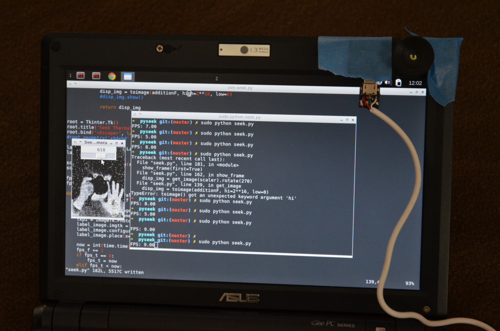
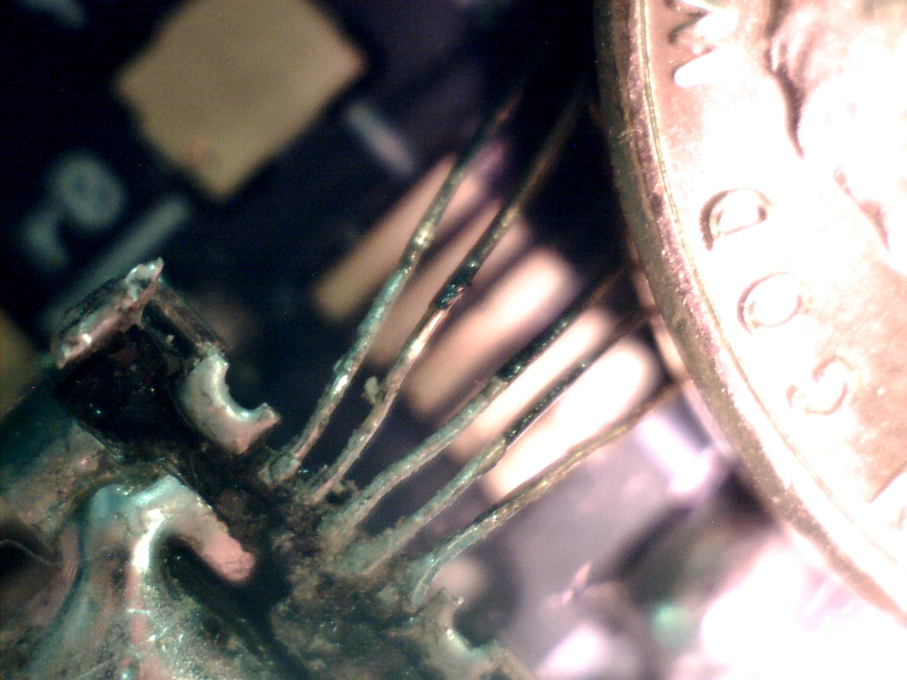

The Seek Thermal is a thermal camera that can be plugged into mobile phones. Various people collaborated over the Internet to reverse engineer it enough to pull raw image data out over its USB connection. I took mine apart and connected a regular USB cable so I could plug it into my laptop and use it with a Python script-based USB interface driver.

There was some challenging soldering to do.